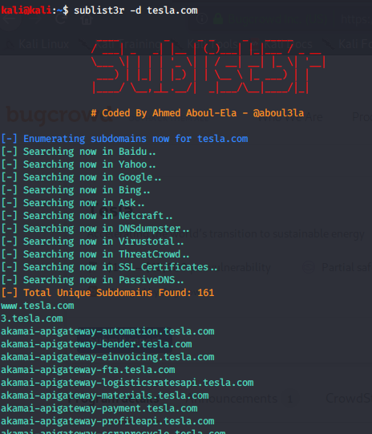

for bug bounty and web penetration testing we need to hunt subdomains
while looking at bugcrowd of tesla :
it had in scope:*tesla.com
means can do anything with a subdomain of tesla.com
so in such cases can utilise subdomains
so using toool called sublist3r
so that we can get all subdoimains ending with tesla.com
and not just the only site tesla.com so that we dont limit ourselves
got a massive list of subdomains

alternative method is to go to crt.sh
and search %.tesla.com
gives us certificates that have been registered and will tell us whats in there
dev.tesla.com,sso.tesla.com,apitoobox.tesla.com could as well be interesting
here u can also get subsubdoimains

sublist3r would also give us subsubdomains